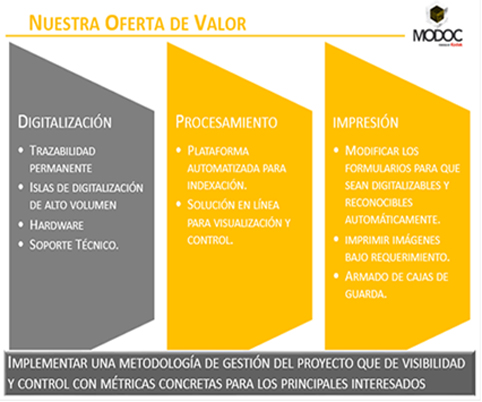

CONSULTORIA DE ARCHIVOS MODOC
Cada empresa tiene una serie de procesos específicos en el desarrollo de su actividad,
procesos únicos que incluyen el archivo y la gestión documental.
La consultoría integral de MODOC analiza cada caso particular para detectar
posibles mejoras y aumentar la rentabilidad de cualquier negocio, gracias a una
correcta gestión de sus archivos
ASESORAMIENTO EXPERTO
Nuestros consultores crean y aportan soluciones ideadas a sus necesidades
NUESTRO SERVICIO
Los servicios de consultoría de MODOC le ofrecen los principales instrumentos de gestión documental: cuadro de clasificación, tabla de acceso y seguridad. Así, su empresa dispondrá de una solución a la gestión de su documentación, tanto si usted necesita una labor de consultoría general para una gran empresa como si quiere una consultoría específica para PYMES.
El archivo de documentos, se puede mejorar siempre mediante una consultoría adecuada, implantando los métodos y procedimientos adecuados para que la información ocupe menos espacio, fluya mejor y, en definitiva, aumente los beneficios de su empresa.
El tiempo que sus empleados dedican a organizar la información es tiempo que podrían dedicar a labores específicas, acordes con su formación profesional. MODOC realiza la tarea de archivar y gestionar la documentación para que los archivos de su negocio estén perfectamente organizados, se puedan encontrar con facilidad, guardar con seguridad y compartir con un solo click.
CONTRATAR SERVICIO DE CONSULTORIA
Descubra cómo puede mejorar la gestión documental de su empresa.
- Cuente con un servicio de consultoría específico para PYMES.
- Confíe en la experiencia de los profesionales de MODOC.
- Implante un método de gestión de archivos que aumente sus beneficios.
- Benefíciese de una consultoría integral que le ofrece soluciones más allá de la gestión documental.
